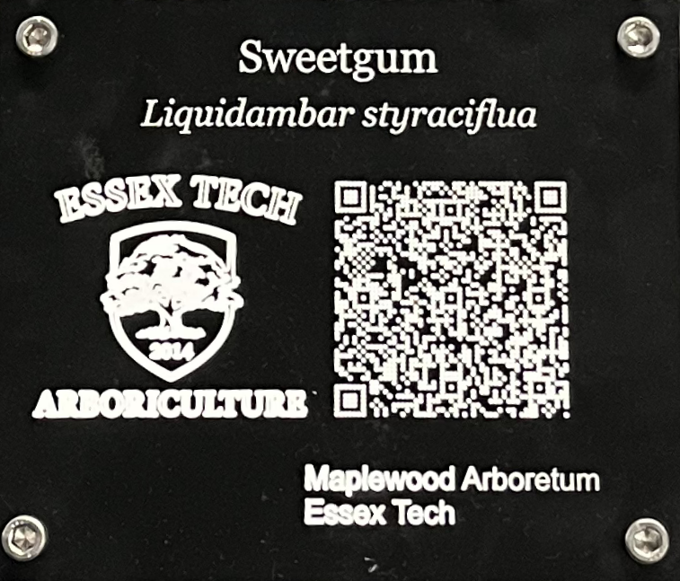

Proud Project
Signs for Arboriculture
Collaborative Project

The goal of this project was to make 30 signs representing the trees of Essex North Shore’s Arboriculture Maplewood Arboretum. Each sign contains the name of the tree in English, and an additional subtext that contains the name in Latin. Underneath, there is a machined QR code that links to a google document containing more information for the tree. Additionally, it contains a logo and the text “Maplewood Arboretum”.
These signs were given to Arboriculture and were a collaboration between us, Metal Fabrication, and partially Carpentry
What were the criteria for the success of the project?
Due to the previous shortcomings of the previous signs, they quickly faded and wore off. As a result, these new signs are fully machined, and therefore are not printed and do not suffer from the same failures. These elements were mounted on an aluminum base through bolts and “thru holes” to mount it very firmly. The aluminum base contains a base with set screws for mounting to the ground at a specific angle. This was attached through tig welding.
Was the project completed according to expectations?
This project was completed according to expectations, and Essex Tech Arboriculture was very thankful and content with the project. As this was a favor rather than a requirement, it meant a lot to them, and to the values for our shop. They will be successfully mounted in the ground for many years of Essex Tech’s future history.
Project's major success: QR Codes
One of the project’s major successes was the QR codes. The QR codes were machined with a milling machine, so they will not wear out over time. They also contain error correction, so they are resistant to dirt or debris. They work perfectly and scan from a wide range of distances.

At first, the QR codes were attempted to be done using Fusion360. Fusion360's advanced sketch and toolpath generator causes it to be very difficult and tedius for this to be done 30 times for each. Also, using a tiny small end mill tracing a SVG (vector file) is nearly impossible to do with such densitiy. In the picture, this QR code's density is much smaller

How it was done
QR Codes are very complex from a topological and graphical complexity perspective.
As the white and black spots form contrast, machining a tool path with an End Mill or other tool will be difficult due the small size needed to achieve such resolution with traditional machining operations such as a pocket or profile.
As a result, software such as Fusion360 will be very suboptimal at automating the toolpath generation of 30 different QR codes.
Fusion360 works with different size tools, and can’t break free from the more common workflow of machine operations.
As a result, I took my previous skills I had as a hobby software developer (C++), and wrote a program that takes all 30 QR codes, and uses a QR code generation library that generates the code.
I used this program to then generate the G-code (toolpath) for each of the QR codes in an automated way.
Creating the QR codes from a website, converting all 30 of them into vector-based files, and importing all of them individually into Fusion360 by importing the image into the sketch is very time consuming and disgusting to think about. My program optimizes this by parsing a text file containing all of the tree names and links, and generates the QR code at the same time it generates the G-code.
Since engraving tools and spot drills can have varying visible diameter due to their nature of having a depth that can be changed, they make for a great option as a tool for engraving QR codes.
Small end mills can be expensive, but the engraving tool does not need to be small due to its ability to only have a tiny radial portion of the tool engraved into the material.
My program has a “for” loop, which loops through each of the spots, or modules, on a QR code on the X and Y axis, and does simple arithmetic to calculate the corresponding X and Y positional coordinates for the machine.
It accumulates a string based on these positional values with corresponding G-code syntax prefixed to their operations. The depth can be calculated by dividing the optimal diameter by 2, because the X is proportional to the Y with a 45 degree tool (as tan(45 deg) = 1).
The division by 2 occurs because the diameter is double the radius. This program was also optimized to save on cycle time by keeping the rapid distance to a minimum.
The code
The Final Result

Additional Information